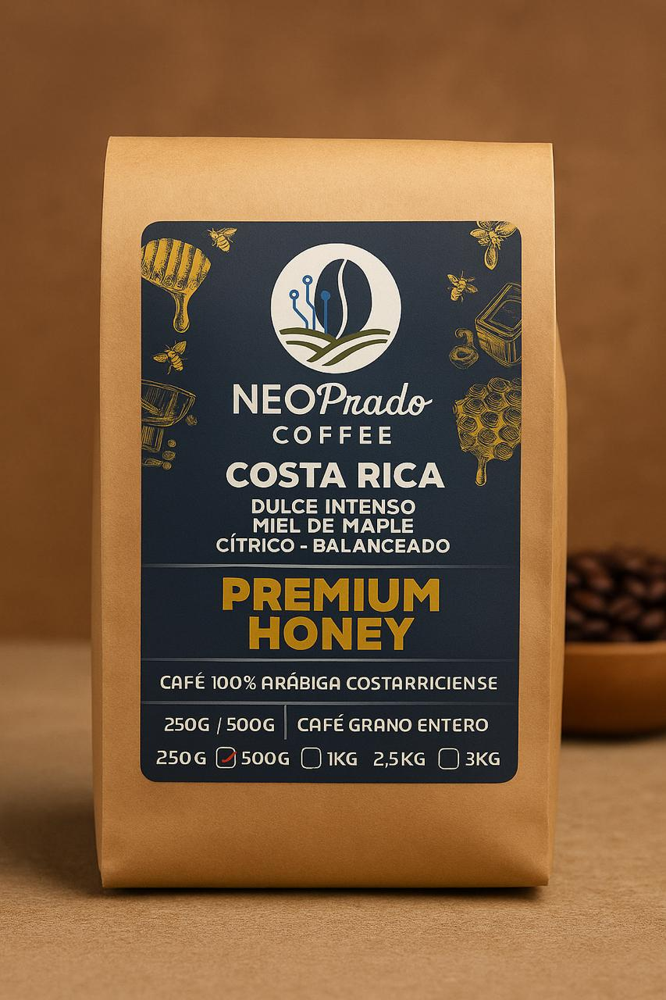
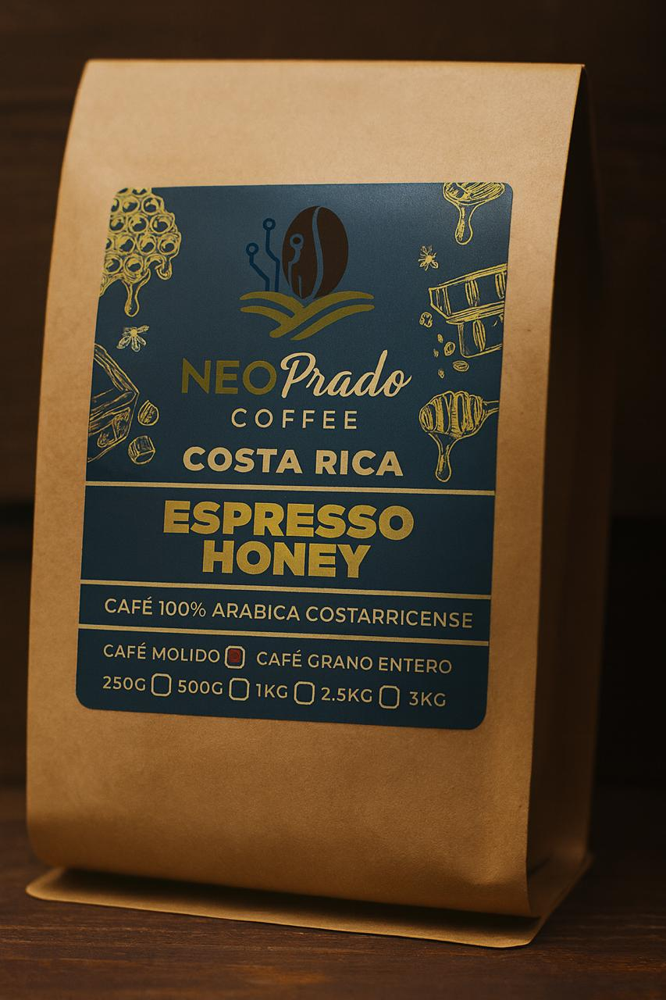

Café de Especialidad
Dulce intenso, miel de maple, cítrico y balanceado. Café 100% arábica costarricense.
₡5,000 - 250g
PedirPerfil intenso ideal para espresso. Café 100% arábica costarricense.
₡5,000 - 250g
PedirEn NeoPrado Café cultivamos café de especialidad con dedicación, pasión y respeto por la tierra. Nuestra finca está ubicada en la majestuosa región de Los Santos, Costa Rica, reconocida internacionalmente por su clima ideal y suelos fértiles para el cultivo del mejor café del mundo.
Somos una familia cafetalera que, generación tras generación, ha trabajado para mantener la calidad y el sabor auténtico del café costarricense. En cada grano, llevamos una historia, una tradición y un compromiso con la excelencia.